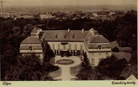
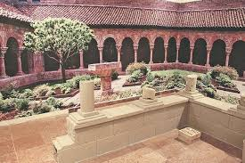

Jellemző öltözködésem
Mit viselünk?

Egy egyszerű, hossz fekete ruhát viseltem, ez azt mutatta rólam, hogy az egyház szolgája vagyok, és a híveket tanítom.
Miből készül a ruhám?
Durva gyapjúból készül, csuklyás csuhát hordtam, kötélövvel a derekamon. A ruhám egyszerűsége azt jelezte, hogy lemondtam a gazdagságról, és Istennek szenteltem az életemet.
Mit árul el rólam a viseletem?
Sok év után püspökké neveztek ki, ekkor már díszes, aranyhímzéses miseruhát viseltem, selyemből és brokátból. A fejemen mitra volt, a kezemben pásztorbotot tartottam, ami a vezető szerepemet jelképezte. Ahogy egyre magasabb rangra kerültem, a ruhám egyre díszesebb lett, és egyre nagyobb felelősség hárult rám az egyházban.
Milyen házba élek?

A templom mellett álló paplakban élek. A ház egyszerű, kőből vagy fából épült, egy-két helyiséges. Van benne ágyam, asztalom, ládám és néhány könyvem.
Van udvarom?

Van egy kisebb udvar a ház mellett. Itt veteményest gondozok, esetleg gyümölcsfák is állnak benne. Az udvar nem dísz, hanem a megélhetést segíti.
Van földem?
Saját földem nincs. A plébániához tartozhat kisebb földterület, amelynek jövedelme az eltartásomat szolgálja. A földet a falu népe műveli.
Van saját műhelyem?
Nincs külön műhelyem. Ha szerzetes lennék, a kolostorban lenne könyvmásoló helyiség vagy gazdasági műhely. Falusi papként fő feladatom a misézés, tanítás és a hívek lelki gondozása.
Van váram?
Nincs váram. Nem vagyok világi földesúr. A várak a király és a nemesek birtokai.
Milyen a település?
Faluban élek. A templom a közösség központja. A házak fából és vályogból épültek. A lakosok földműveléssel és állattartással foglalkoznak. Az egyházi ünnepek – karácsony, húsvét, pünkösd – meghatározzák a falu életét.
Hogy telik egy hétköznapom?
Ma is a harangszó ébresztett, még pirkadat előtt. Néha úgy érzem, az ember csontjai tiltakoznak a hideg kövek ellen, de a léleknek nincs joga lustálkodni. A reggeli ima alatt még félálomban voltam, de mire a zsoltárok végére értem, megnyugodott a szívem. Mise után a faluból jöttek hozzám. Egy asszony a beteg gyermekéért kért áldást, egy öregember gyónni akart. Sokszor érzem, hogy nagyobb terhet hoznak, mint amit ember elbírna, de mégis figyelnem kell. Nem mondhatom nekik, hogy fáradt vagyok. Délelőtt a scriptoriumban dolgoztam. Tintával másoltam egy régi könyvet. A kezem elfárad, a szemem ég, de amikor egy oldal elkészül, olyan, mintha valami maradandót hagynék magam után. A betűkben ott él a tudás – és talán Isten akarata is. Délben egyszerű ételt kaptunk: kenyér és leves. Ünnepnapokon több jut, de hétköznap be kell érnünk ennyivel. Néha irigylem a parasztokat, akik este nevetve ülnek a tűz mellett, de aztán eszembe jut: az én utam más.
Van-e különbség a hétköznap és az ünnep között?
Ha ünnep van, minden megváltozik. Több gyertya ég a templomban, az emberek tisztább ruhát vesznek fel, és a hangjuk is vidámabb az ének alatt. Olyankor érzem igazán, hogy a közösség egy test. Hétköznap csend és fegyelem, ünnepen fény és öröm.

Mivel töltöm a szabadidőm?
Szabad időm ritkán akad. Ha mégis, kiülök a kolostor kertjébe. Hallgatom a szelet, nézem a felhőket. Néha kételyek gyötörnek – vajon elég jó pásztora vagyok-e a rám bízottaknak? Aztán imádkozom, és csend lesz bennem.Az életem nem könnyű, nem fényes, és nem is zajos. De rend van benne. Ima, munka, szolgálat. És talán ez elég.
Milyen munkát végzek
Misézem és kiszolgáltatom a szentségeket (keresztelés, esketés, temetés). Prédikálok és tanítom a híveket a keresztény hitre. Gondozom a templomot és vezetem az egyházi ünnepeket az év rendje szerint. Látogatom a betegeket, vigasztalom a rászorulókat. Beszedem és kezelem az egyházi tizedet az egyház törvényei szerint.
Kinek tartozom engedelmességgel?
Engedelmességgel tartozom a püspökömnek, aki az egyházmegyét vezeti. Az egyház rendje szerint felettem áll az esztergomi érsek, például az Esztergomi Főegyházmegye vezetője. Végső soron a római pápának tartozom engedelmességgel.
Ki függ tőlem?
A falum hívei lelki értelemben tőlem függnek. Én keresztelem gyermekeiket, én adom össze a házasulókat, és én temetem el halottaikat. Tanítom a gyermekeket az alapvető imádságokra és a keresztény hitre.